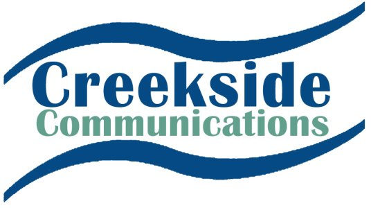
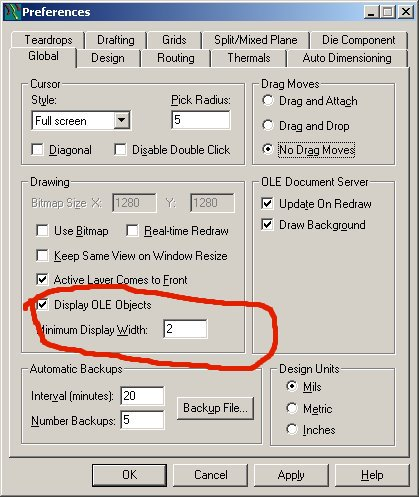
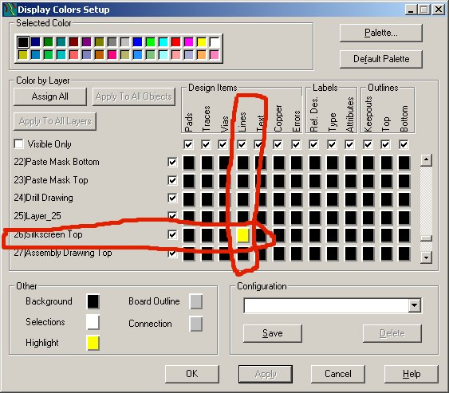
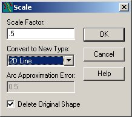
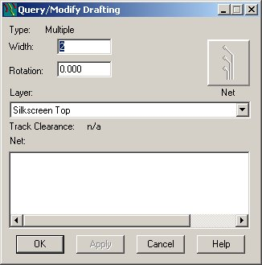

BMP TO ASCII TOOL Directions.
This tool was written by
James Tidman (jtidman@flash.net) and was
originally available from
http://www.flash.net/~jtidman/BMP2ASC/BMP2ASC.html
The file required is here.
Click Here for BMP2ASC.EXE
Alas the web site is not
there anymore and many people have had trouble using this utility. For this reason I have made directions for
it’s use – they are taken from the original HTML made by James with some
clarification from me. These directions assume you are using PADS PCB 4.x or higher. If you have any
questions please email me at Hawker@ashevillecommunity.org
Why?
This tool is used to import company or regulatory logos, or other graphical elements into the PADS database. These images can then be placed on the silkscreen, or any other layer.
How?
This tool will scan a windows BMP (two color only) file and convert it into a PADS .ASC file format. This file can then be imported into the design database. In scanning the BMP file, a left to right, top to bottom approach is used. Each continuous group of white pixels is translated into a single line segment in the ASC file.
What is the best method to use?
Any two color, black and white BMP file can be converted. However, for best results, please use the following method (we’ll talk in Mils, and try to show examples):
First, we need the image we need to convert the image to a size and format we can use.

This is the original Image. First we need to convert to 2 colors and make it a BMP (Windows BitMap File).
I would like to take this time to plug my favorite tool
for the graphical work: PaintShop Pro. You can get it from http://www.jasc.com/.
This is a useful tool for grabbing images from the screen, converting them
to black and white, scaling them to fit and saving them in windows bitmap
format.
If using PSP use Colors / Decrease Color Depth / 2 colors. The image now looks like this.
Now Use Colors Negative Image to get this result.
Lastly save as a BMP file - if the file is very large you might want to scale it first.
When the image is imported the ration is 1 pixel = 2 mills. So if
you want the image to be 500mills x 250mills draw it as 250x125
pixels. I usually take what I get and use PADS to scale it as I
need for the application.
Once this bit map is saved in 2 color mode, we run the program with the following arguments (assuming the program and the bit map are in the same directory):
BMP2ASC input.bmp output.asc 2 26 0 0
The format for this command is BMP2ASC <output file name>
<line width> <layer> <origin X> <origin Y>.
This will scan the data and convert it to horizontal lines 2 mils wide. These lines will be placed on layer 26 (silkscreen top), and the lower left-hand corner of the image will be at 0,0.
Next open up a new PADS file, and import the ASC file INTO AN EMPTY FILE (FILE/ NEW FILE/IMPORT/ASCII FILE). Be sure to set the color and the minimum display width: Also be sure that the silk layer is turned on (has a color assigned to it). You will probably want to hit "home" to find your image.


Select the complete item, and then combine it (Right Mouse Button - Select Anything - CTRL A - Right Mouse Button Combine). This may take a while for complex images. Once complete, select save to library from the mouse right-click menu when in the drafting..
You can now past it in to existing designs using the paste
from library button bar:
If it is not scaled the way you want you may change scale and layer. Example scale 2:1 and move to copper layer.
To Scale - place the image where you want.
RMB - SELECT SHAPE - (select shape) - RMB EXPLODE - RMB SCALE

This example makes the output 1/2 the size of the original. Note the
PADS scale command currently always puts 2d lines on the top
layer. Next select the object - RMB Query Modify - change the
layer back to silk (or where ever you want it).

Now RBM Combine and your done.
Regards,
James Tidman
jtidman@flash.net
Rick Shaich
Hawker@AshevilleCommunity.org